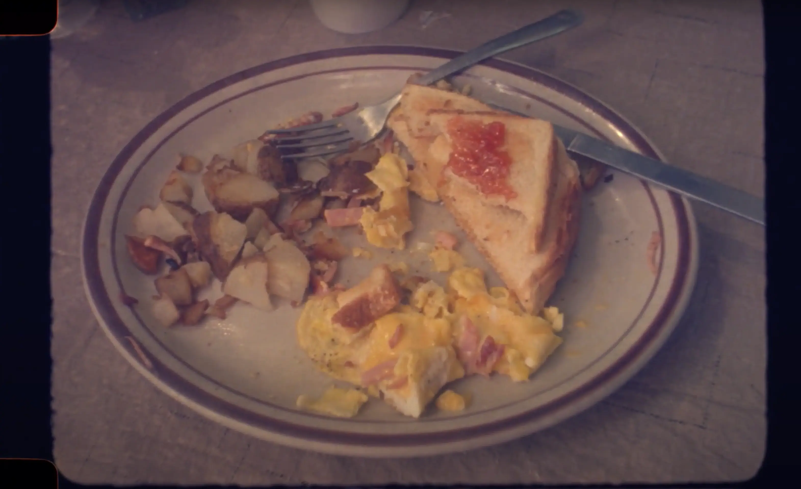
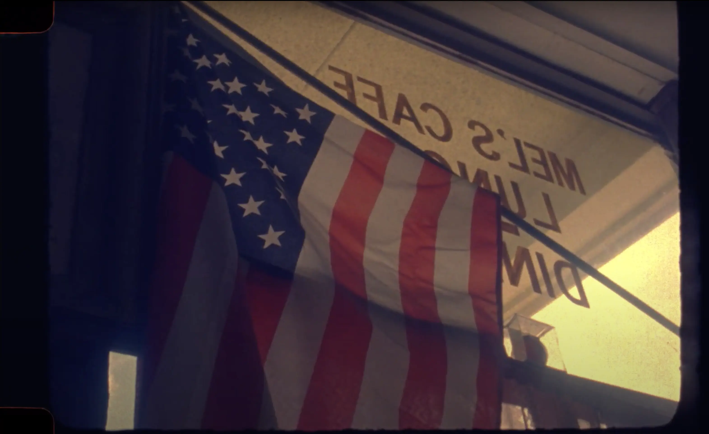
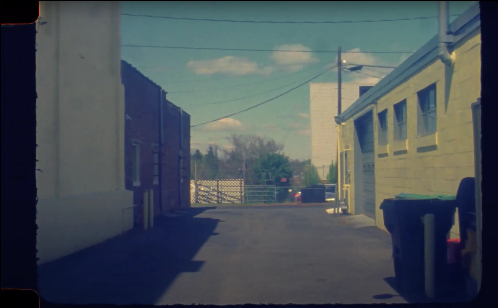
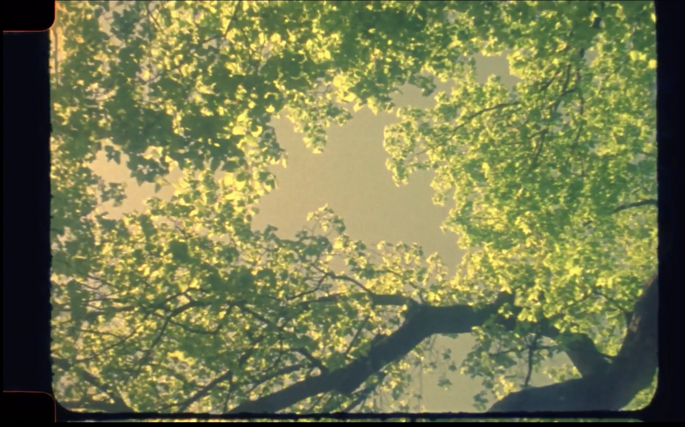
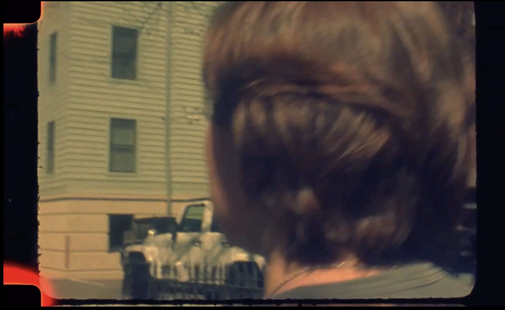
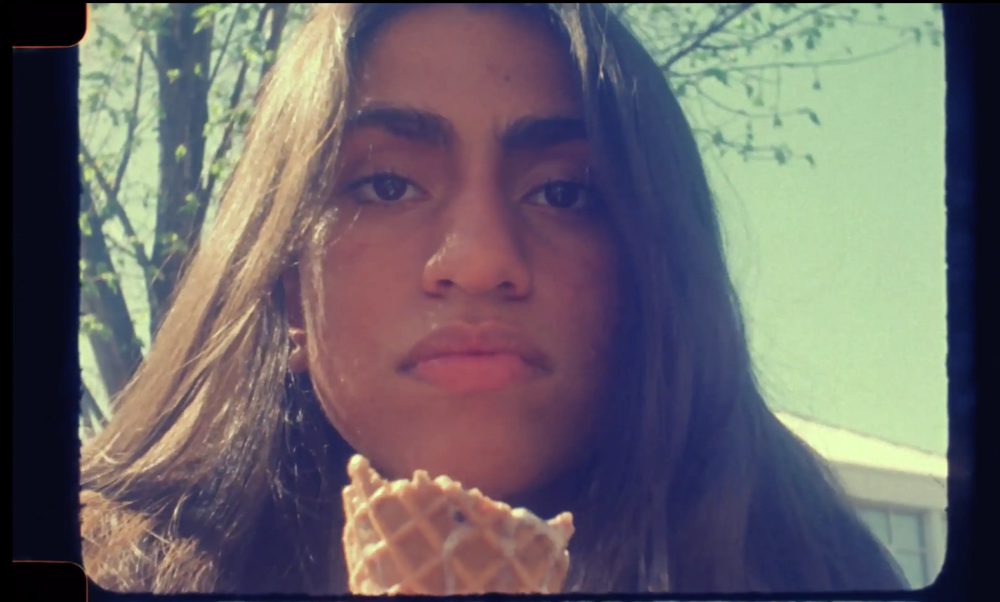
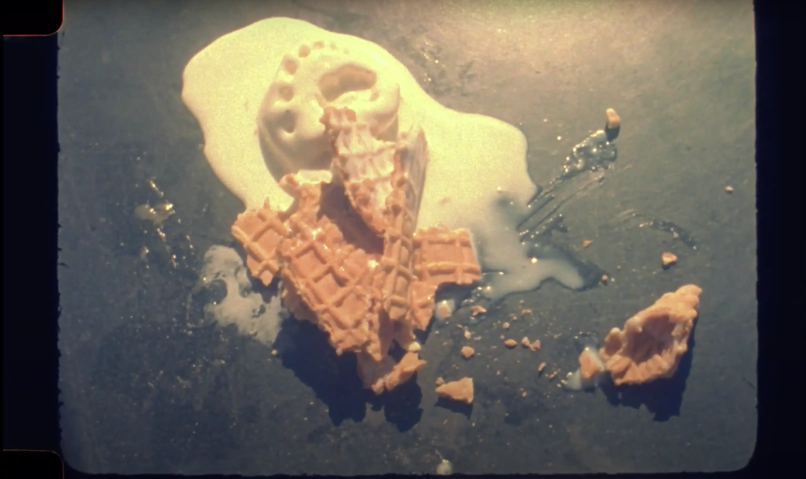
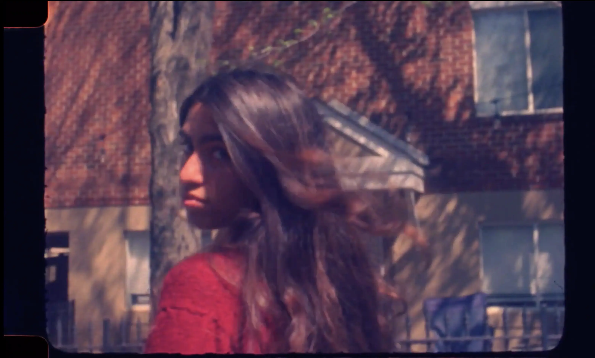

Intro Film
Spring 202216-mm Color Negative Film
Shorts shot on 16 mm film for Kevin Everson’s introduction to Film class where bolex cameras were used to explore experimental storytelling. Three vignettes: Brunch, A Kettle Boils While being Watched, and Haiku.
